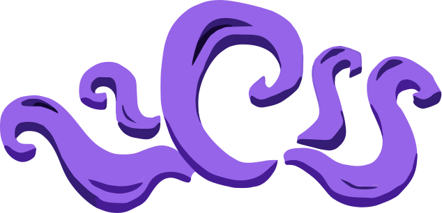
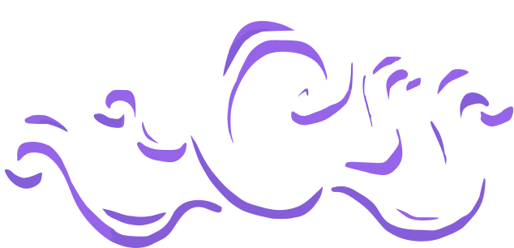

01
Негізгі платформа
Лазерлік кесілген акрил шанақ, төмен ауырлық орталығы және тез ауыстырылатын батарея науасы.
Прототип v3FIRST® LEGO® League Challenge · 2024–2025 SUBMERGED℠
STEM-ге құштар оқушылардан құралған, біз инженерлік ойлау мен шығармашылықты біріктіріп, аймақтық және халықаралық аренада Қазақстанды таныстырамыз.
Құрылған жыл
Жетекші жоба, миссия прототиптері
Аймақтық жүлде және стипендия
Команда
8 қатысушы, 2 ментор. Әрқайсысы стратегия, код, механика, жоба бағытында.
Команда беті →Маусым
Соңғы екі маусымдағы миссия, ұпай стратегиясы және жобалық спринттер.
Маусымды көру →Жоба
Су сапасын өлшейтін портатив сенсор, 3D моделі мен дерек платформасы.
Жобаны ашу →

Демалыс сайынғы ашық лабораторияда тетік құрастыру, код жазу және презентация дайындау сабақтарын өткіземіз.
Кімбіз
SnapMaker — механика, бағдарламалау, дизайн және маркетинг бағыттарын біріктіретін жасөспірімдер командасы. Біз FLL ережелерін сақтай отырып, миссия уақытын секундқа дейін жақсартамыз және инновациялық жобамыз арқылы қоғамға әсер етеміз.
2024–2025 маусымы
Су астындағы ізденіс тақырыбында роботымыз дәл позициялау, модульдік манипулятор және су ағынын модельдейтін тренажер арқылы тапсырмаларды орындауға бейімделген.
Қазыларға арналған екі минуттық сторителлингті визуализациямен бірге жаттықтырамыз.
Робот және инновация
Әр модуль миссияны 90 секундтан асырмай аяқтауға және техникалық тәуекелді азайтуға бағытталған.
Лазерлік кесілген акрил шанақ, төмен ауырлық орталығы және тез ауыстырылатын батарея науасы.
Прототип v33D баспамен шыққан адаптерлер; магниттік бекітпе арқылы модуль 5 секундта ауысады.
ДайынOpenMV камерасы арқылы түстік маркерлерді тану, командалық протокол — UART.
R&DСу сапасын азаматтық мониторингтеу платформасы: датчикті бекітпе, дерек жинау және визуал панель.
ПилотЖоспар
Кесте 2024–2025 маусымына арналған. Өзгерістер болса, жаңартып отырамыз.
SUBMERGED℠ тапсырмаларын талдау, дизайн-спринт мақсаты анықталды.
Алғашқы шасси, сызықтық қозғалыс сынақтары, құжаттауды бастау.
Роботтық ойын + инновациялық жоба питчі. Ұпай жинау стратегиясы бекітілді.
Қажет болса, қосымша миссияны енгізу және презентацияны жаңарту.
Команда
8 қатысушы · 2 ментор. Әрқайсысы екі бағытқа жауап береді.
Капитан · стратегия, презентация
Story leadБағдарламалау · PID, көру жүйесі
EV3 & SpikeЖоба · зерттеу, прототип
UX зерттеуМеханика · 3D баспа, модульдер
Fusion 360Инженерлік құжат · BOM, сызбалар
NotionКоммуникация · SMM, медиа
КонтентМенторлар
RoboCup финалисі, механика және стратегия бойынша кеңесші.
Data engineer, инновациялық жобаны деректермен негіздеуге көмектеседі.
Байланыс
Жаңа қатысушыларды, менторларды және серіктес ұйымдарды қарсы аламыз. Бізбен байланысып, келесі жаттығу күніне жазылыңыз.
Робот бөлшектері, 3D баспа материалы немесе логистика бойынша қолдау көрсете аласыз. Барлық демеушілер сайтта және презентацияда аталады.